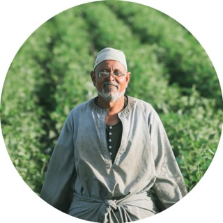

Meet Denilo!
Jambi, Indonesia
Meet Denilo, a skilled farmer from the Jambi Province of Indonesia, who has been cultivating tropical fruits for over 20 years. Denilo has a passion for growing a variety of exotic fruits, including durian, rambutan, and jackfruit, using sustainable and eco-friendly farming practices. He takes great care in selecting only the highest-quality fruits, handpicking them at the peak of ripeness to ensure maximum flavor and freshness. Denilo is proud to share the delicious fruits of his labor with people around the world, and hopes that everyone who tries them will appreciate the care and hard work that goes into every fruit.
Meet Omar!
Cairo, Egypt
Meet Omar, a skilled farmer from the bustling city of Cairo, Egypt. Omar has been growing a variety of fruits and vegetables for over a decade, using innovative and sustainable farming techniques to produce high-quality crops. He takes pride in his work, dedicating long hours to the field to ensure that each plant receives the care and attention it needs to thrive. Omar specializes in growing tomatoes, cucumbers, and eggplants, which are staples of the Egyptian diet. He is passionate about providing fresh and healthy produce to the people of Cairo, and hopes to inspire others to take an interest in agriculture and sustainable living. If you're ever in Cairo, be sure to try some of Omar's delicious and locally-grown produce!

Meet Reshma!
Devarakonda, India
Meet Reshma, a dedicated farmer from the picturesque Devarakonda region of India. Reshma comes from a long line of farmers, and has been working in the fields since she was a child. She specializes in growing a variety of flavorful and aromatic spices, including turmeric, coriander, and cumin, using traditional and organic farming methods. Reshma takes great pride in her work, carefully tending to her crops and ensuring that each spice is of the highest quality. She is passionate about preserving her family's farming traditions, while also adopting new techniques to keep up with the demands of the modern world. Reshma hopes to share the rich flavors and aromas of her spices with people around the world, and invites everyone to try the authentic taste of Devarakonda.